HƯỚNG DẪN SỬ DỤNG
(Chức năng tạo và khai báo chứng từ số hóa bằng ECUS.AI)
Theo cách này, người dùng chỉ việc đính kèm các file chứng từ, sau đó ECUS.AI tiến hành phân tích tự động. Khi có kết quả phân tích, doanh nghiệp kiểm tra đối chiếu kết quả với chứng từ gốc, sau đó tạo tờ khai kèm chứng từ số hóa.
Người dùng có thể truy cập và sử dụng cách tạo chứng từ bằng AI theo 3 cách sau:
- Cách 1: Tạo chứng từ sử dụng ECUS.AI – từ quy trình 3 bước
- Cách 2: Tạo chứng từ sử dụng ECUS.AI – từ hồ sơ hải quan
- Cách 3: Tạo chứng từ sử dụng ECUS.AI – từ tờ khai hải quan đã có.
Mỗi cách có một số điểm khác cụ thể như phần hướng dẫn sau đây:
Ở cách này, người dùng có thể phân tích chứng từ để tạo tờ khai Hải quan cùng chứng từ số hóa cho tờ khai.
Bước 1: Đính kèm file chứng từ
Bạn truy cập vào menu Tờ khai Hải quan / Tạo tờ khai Hải quan bằng ECUS.AI:
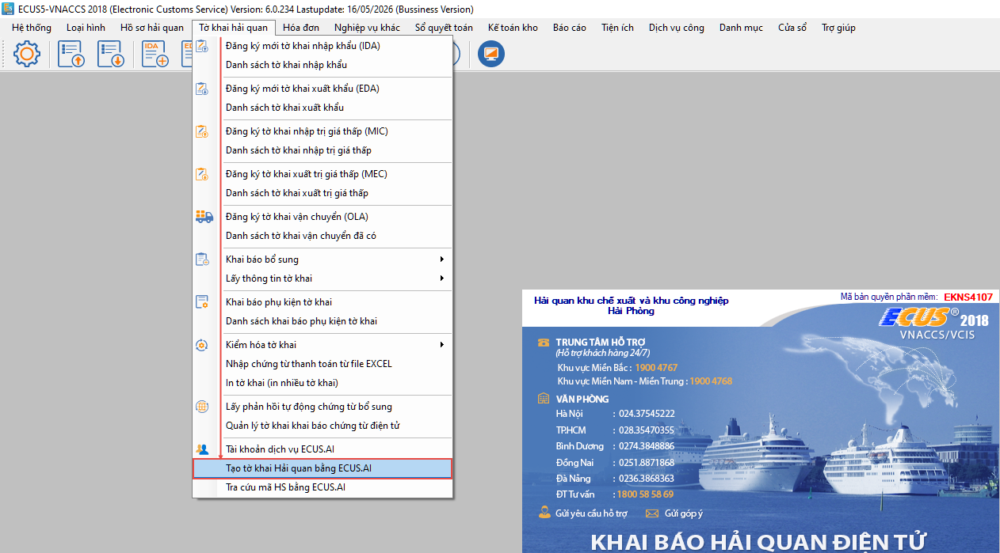
Tại giao diện chức năng, người khai chọn loại hình hồ sơ (Kinh doanh, Sản xuất xuất khẩu, Gia công, Chế xuất) để phần mềm đưa ra danh sách các chứng từ mặc định cần có:
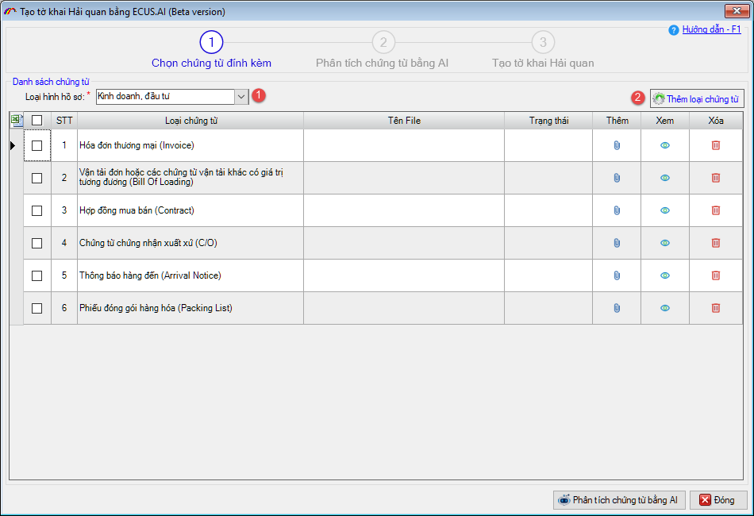
Bạn có thể bổ sung thêm chứng từ khác bằng cách nhấn vào (2) Thêm loại chứng từ.
Người khai lần lượt đính kèm các file chứng từ đang có của bộ hồ sơ như: Hóa đơn, vận đơn, hợp đồng, C/O… bằng cách nhấn vào biểu tượng đính kèm tại cột Thêm. Lưu ý: Định dạng file đính kèm phải là PDF, PNG hoặc JPG.
Bước 2: ECUS.AI tiến hành phân tích chứng từ tự động.
Khi đã đính kèm các file chứng từ của bộ hồ sơ, người khai nhấn vào nút Phân tích chứng từ bằng AI:
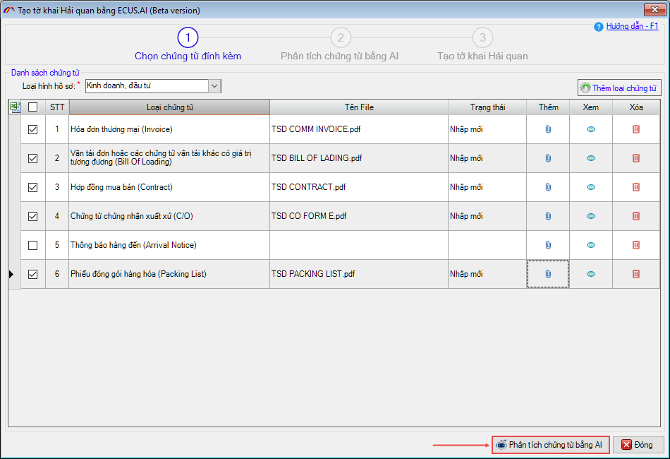
ECUS.AI sẽ thực hiện phân tích chứng từ hoàn toàn tự động, bạn chờ đến khi quá trình phân tích kết thúc.
Lưu ý: Khi thực hiện phân tích chứng từ, người khai đã phải có tài khoản sử dụng dịch vụ ECUS.AI để đăng nhập hệ thống. Trường hợp chưa có tài khoản, người khai có thể dùng thử 7 ngày bằng cách tích chọn vào Sử dụng tài khoản dùng thử (7 ngày) phần mềm sẽ tự động điền thông tin tài khoản, mật khẩu dùng thử, bạn nhấn nút Đăng nhập để đăng nhập hệ thống:

Khi quá trình phân tích thành công cho tất cả chứng từ, hệ thống sẽ hiển thị màn hình kết quả phân tích để người dùng kiểm tra và tạo tờ khai Hải quan.
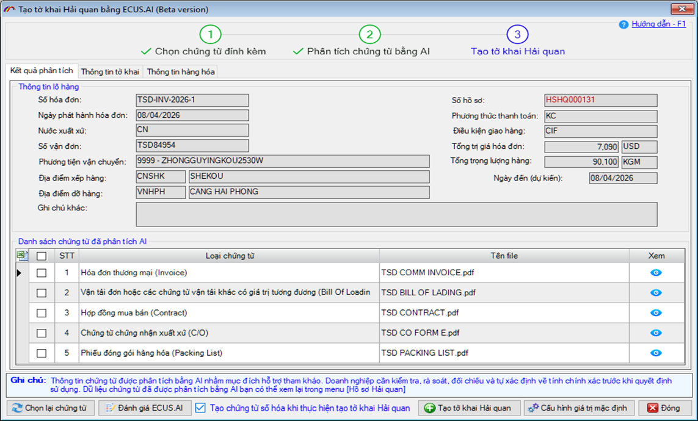
Bước 3: Kiểm tra kết quả phân tích và tạo tờ khai, chứng từ số hóa.
Sau khi phân tích thành công, bạn kiểm tra kết quả phân tích với chứng từ gốc, có thể đối chiếu các chỉ tiêu đã được số hóa với chứng từ gốc một cách trực quan bằng cách nhấn vào biểu tượng con mắt tại danh sách chứng từ:
Màn hình kiểm tra đối chiếu hóa đơn:
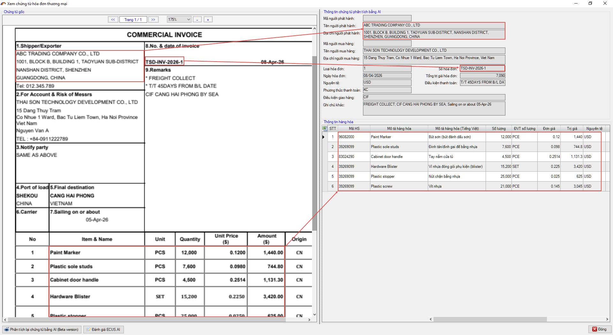
Màn hình kiểm tra đối chiếu thông tin vận tải đơn:
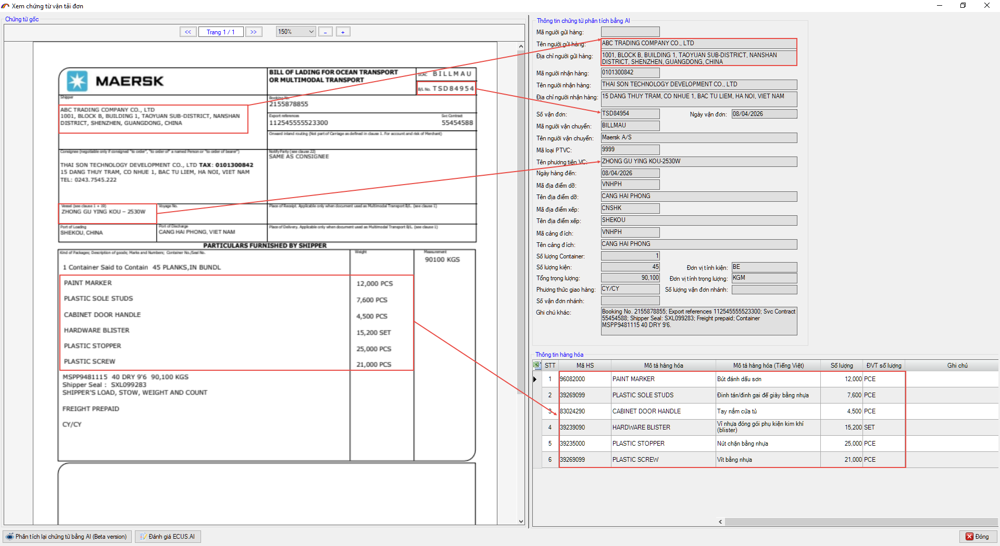
Thông tin hàng hóa được ECUS.AI tự động xác định mã số hàng hóa (HS code) dựa vào thông tin mô tả hàng hóa trên chứng từ, dịch tự động tên hàng sang Tiếng Việt và các thông tin về xuất xứ, số lượng, đơn vị tính, đơn giá, trị giá của hàng hóa.
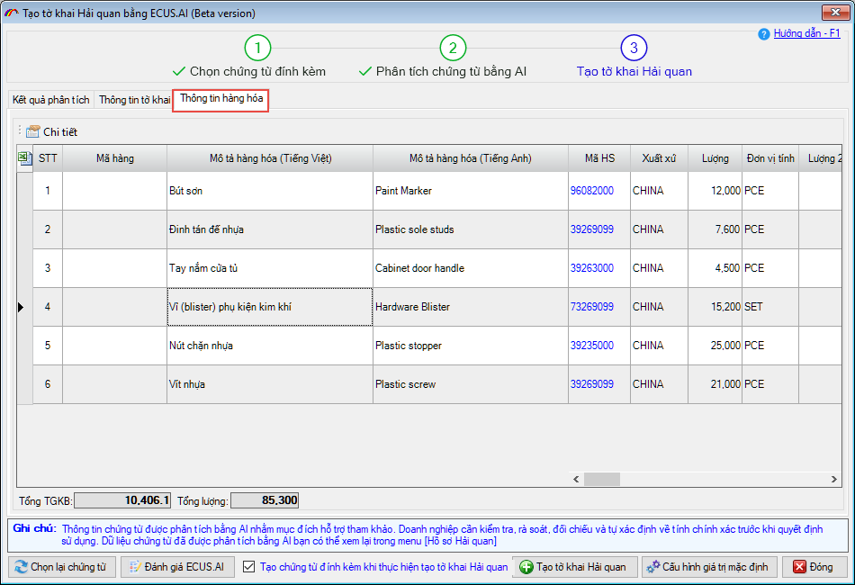
Sau khi kiểm tra kết quả phân tích, nếu các thông tin đã chính xác, người khai nhấn nút: Tạo tờ khai Hải quan đồng thời tích chọn vào: Tạo chứng từ số hóa khi tạo tờ khai hải quan, phần mềm sẽ hiện bảng thông báo lựa chọn hàng hóa cho tờ khai:

Lựa chọn 1: Lấy thông tin hàng hóa trên chứng từ vào tờ khai.
Với lựa chọn này, phần mềm sẽ đưa toàn bộ thông tin hàng hóa hiện có trong tab Thông tin hàng hóa để đưa vào tờ khai.
Lựa chọn 2: Không lấy thông tin hàng hóa trên chứng từ vào tờ khai.
Với lựa chọn này, khi tạo tờ khai sẽ không bao gồm thông tin hàng hóa, người khai sẽ tự nhập thủ công danh sách hàng vào tờ khai (nhập thủ công, import từ excel, chọn từ danh mục…).
Lựa chọn 3: Nếu có mã hàng, lấy các thông tin trong danh mục tương ứng vào tờ khai (Gia công, SXXK)
Với lựa chọn này, phần mềm sẽ dựa vào mã hàng để MAP thông tin Tên hàng, đơn vị tính, mã số HS theo danh mục đã đăng ký trước đó. Lựa chọn này chỉ áp dụng đối với loại hình Gia công hoặc SXXK.
Cuối cùng, người khai đánh dấu tích chọn vào mục Tôi đã hiểu và đồng ý, sau đó nhấn nút Xác nhận để phần mềm tạo tờ khai Hải quan.
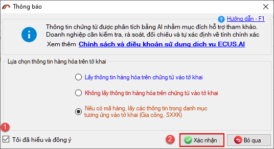
Sau khi phần mềm tạo tờ khai Hải quan thành công, phần mềm sẽ đưa các kết quả phân tích vào chỉ tiêu thông tin tương ứng trên tờ khai, người khai kiểm tra, xác nhận các tiêu chí thông tin và tiến hành khai báo lên cơ quan Hải quan.

Các chứng từ số hóa cũng được tạo kèm khi tạo tờ khai, người khai kiểm tra tại tab Quản lý tờ khai / Danh sách chứng từ số hóa:
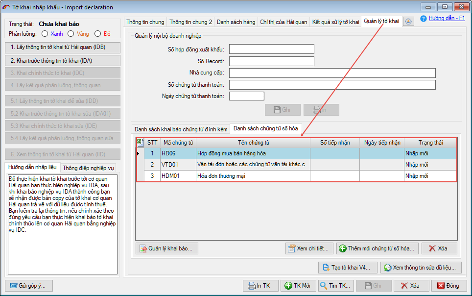
Sau khi tờ khai được khai báo, người khai có thể khai các chứng từ đính kèm này ngay mà không cần phải nhập dữ liệu.
Cách này cũng gần giống với cách 1 đã hướng dẫn ở trên, có sử dụng chức năng phân tích và tạo chứng từ số hóa tự động bằng ECUS.AI.
Bước 1: Chọn hồ sơ nhập khẩu hoặc xuất khẩu.
Ở cách 1, hệ thống dựa vào thông tin trên chứng từ để tự động xác định loại hình hồ sơ là nhập khẩu hoặc xuất khẩu thì ở cách này, người khai tự xác định và lựa chọn bằng cách vào menu Hồ sơ hải quan / chọn Thêm mới hồ sơ nhập khẩu (hoặc xuất khẩu):

Bước 2: Chọn và đính kèm file chứng từ cho hồ sơ
Tại màn hình chức năng của hồ sơ, người khai tiến hành chọn để đính kèm các file chứng từ tương ứng:

Các chứng từ trên form đang được phần mềm thiết lập mặc định theo các chứng từ thường có cho mỗi loại hình đã chọn, người khai có thể chọn thêm các chứng từ khác bằng cách nhấn vào nút Thêm loại chứng từ để chọn:

Bước 3: ECUS.AI thực hiện phân tích chứng từ
Sau khi đính kèm file chứng từ cho hồ sơ, người khai nhấn nút Phân tích chứng từ bằng AI, để ECUS.AI tiến hành phân tích chứng từ:

Lưu ý: Khi thực hiện phân tích chứng từ, người khai đã phải có tài khoản sử dụng dịch vụ ECUS.AI để đăng nhập hệ thống. Trường hợp chưa có tài khoản, người khai có thể dùng thử 7 ngày bằng cách tích chọn vào Sử dụng tài khoản dùng thử (7 ngày) phần mềm sẽ tự động điền thông tin tài khoản, mật khẩu dùng thử, bạn nhấn nút Đăng nhập để đăng nhập hệ thống:
Quá trình phân tích hoàn toàn tự động và nhanh chóng, bạn chỉ việc chờ cho đến khi quá trình phân tích kết thúc:

Bước 4: Kiểm tra kết quả và tạo tờ khai kèm chứng từ số hóa
Sau khi phân tích thành công, các tiêu chí trên chứng từ được phần mềm số hóa và đưa vào các chỉ tiêu tương ứng của tờ khai, danh sách hàng hóa.

Người khai tiến hành kiểm tra, đối chiếu kết quả với chứng từ gốc một cách trực quan bằng cách nhấn vào biểu tượng con mắt tại cột Xem trong danh sách chứng từ ở tab Kết quả phân tích:

Tại tab Kết quả xử lý, người khai có thể tạo các chứng từ số hóa bằng cách đánh dấu tích chọn và nhấn nút Tạo chứng từ số hóa:

Hoặc tạo tờ khai Hải quan kèm chứng từ số hóa từ các thông tin kết quả phân tích bằng cách chuyển sang tab Thông tin tờ khai:

Chứng từ số hóa được tạo, tạo kèm tờ khai sẽ hiển thị tại tab Quản lý tờ khai / Danh sách chứng từ số hóa:
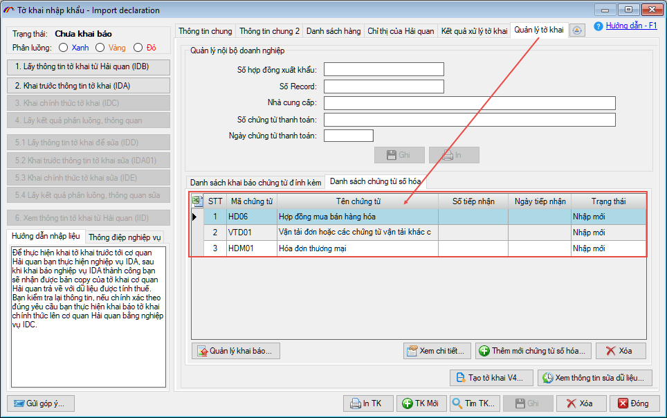
Ở cách này, người khai đã khai báo tờ khai và chỉ muốn sử dụng ECUS.AI để phân tích và tạo chứng từ số hóa (không cần tạo tờ khai Hải quan).
Để thực hiện, bạn mở tờ khai đã khai báo, phân luồng và truy cập vào tab Quản lý tờ khai / Danh sách chứng từ số hóa.
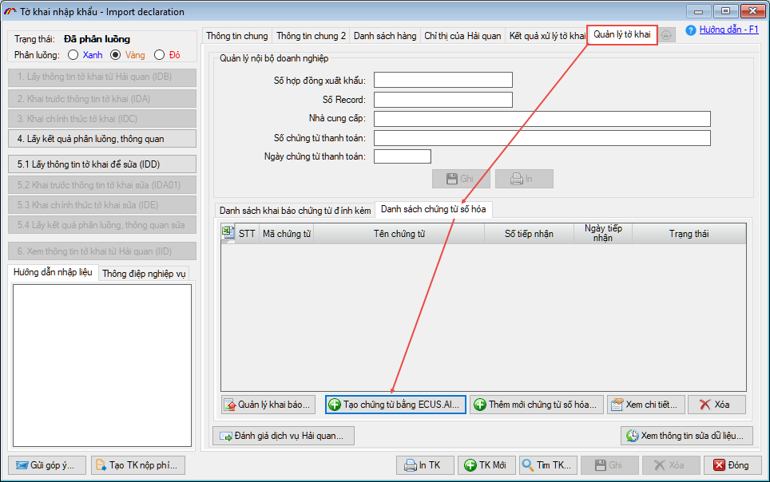
Nhấn vào nút Tạo chứng từ bằng ECUS.AI, màn hình chức năng hiện ra như sau:
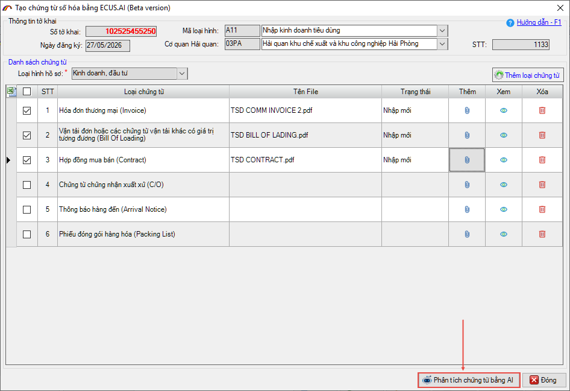
Người khai thực hiện chọn các file chứng từ cần phân tích để tạo chứng từ số hóa, sau đó nhấn vào nút Phân tích chứng từ bằng AI.
Lưu ý: Khi thực hiện phân tích chứng từ, người khai đã phải có tài khoản sử dụng dịch vụ ECUS.AI để đăng nhập hệ thống. Trường hợp chưa có tài khoản, người khai có thể dùng thử 7 ngày bằng cách tích chọn vào Sử dụng tài khoản dùng thử (7 ngày) phần mềm sẽ tự động điền thông tin tài khoản, mật khẩu dùng thử, bạn nhấn nút Đăng nhập để đăng nhập hệ thống:
Sau khi đăng nhập tài khoản thành công, ECUS.AI tiến hành phân tích chứng từ tự động.
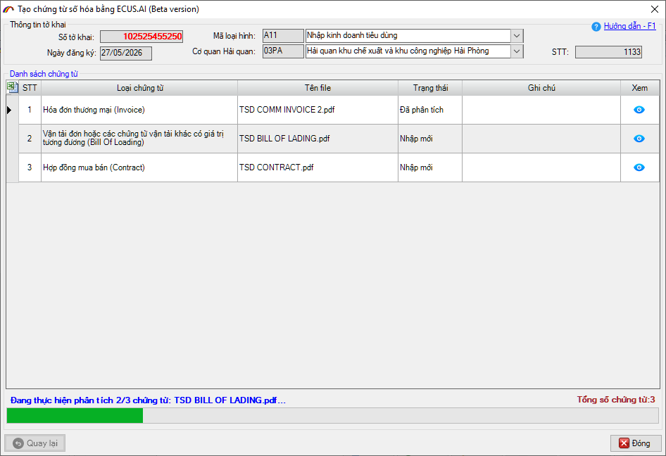
Bạn chỉ việc chờ đến khi quá trình phân tích hoàn tất (thường sẽ hoàn thành trong vòng 1-2 phút).
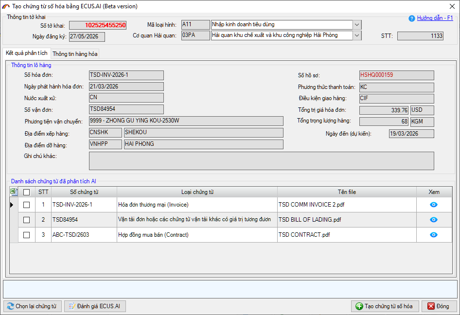
Tại màn hình kết quả phẩn tích, bạn kiểm tra đối chiếu thông tin kết với chứng từ gốc, thông tin hàng hóa tại tab Thông tin hàng hóa.
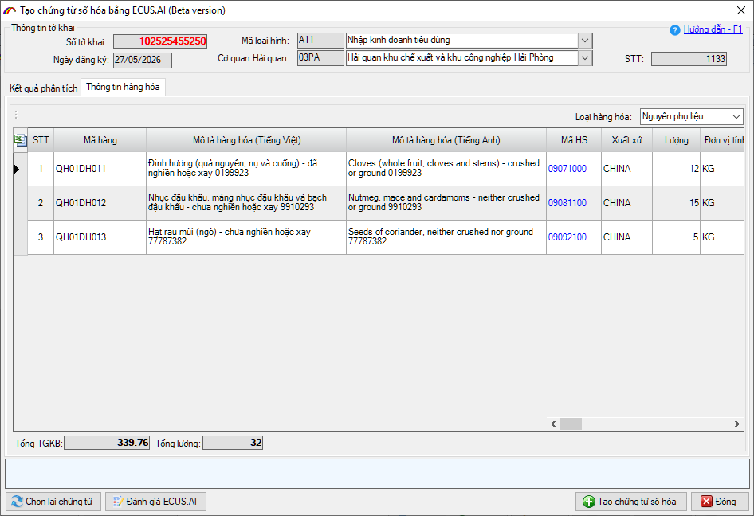
Kiểm tra chi tiết từng chứng từ bằng cách nhấn vào biểu tượng con mắt tại cột xem:
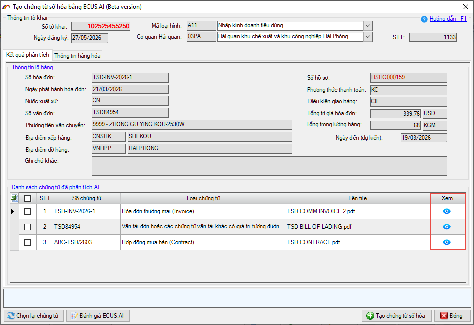
Màn hình kiểm tra chi tiết hóa đơn:
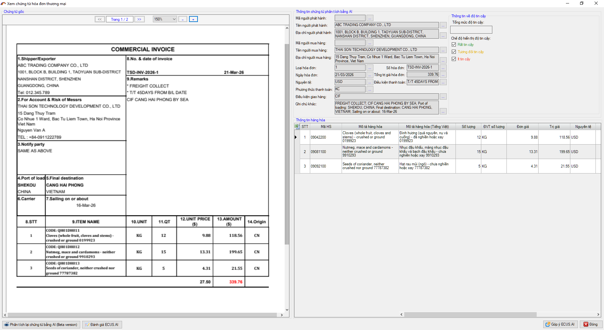
Sau khi kiểm tra chính xác các thông tin, bạn nhấn nút Tạo chứng từ số hóa để phần mềm tự động tạo các chứng từ số hóa từ kết quả phân tích:
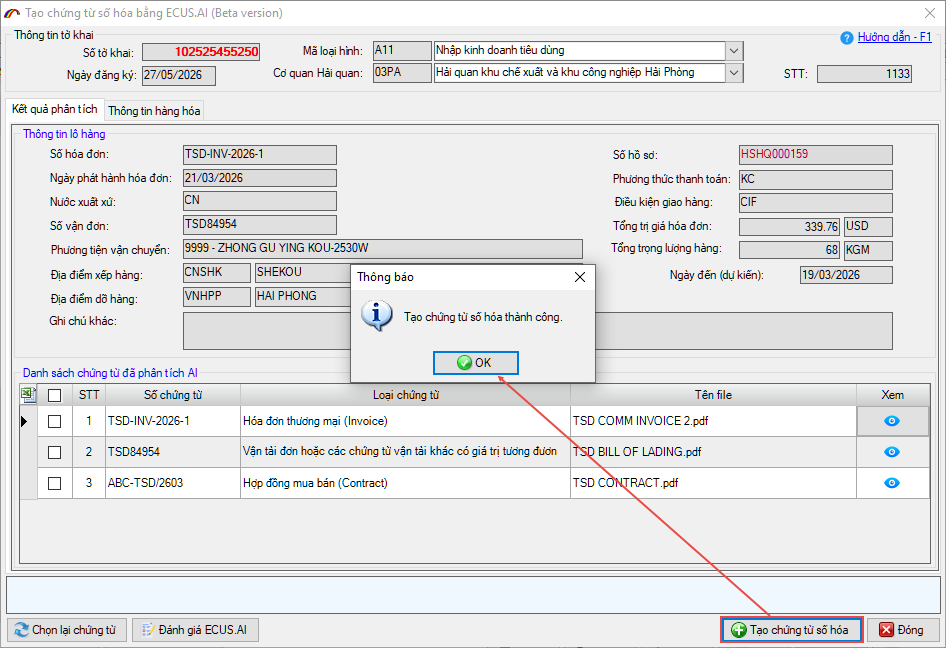
Tạo thành công bạn quay về tờ khai tại tab Quản lý tờ khai / Danh sách chứng từ số hóa để xem lại các chứng từ vừa tạo.

Bạn nhấn đúp chuột vào các chứng từ trong danh sách để xem chi tiết.